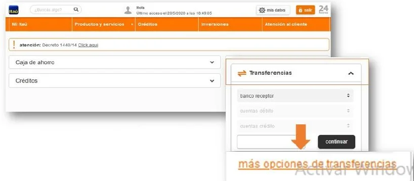
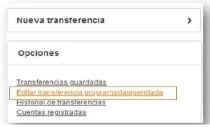
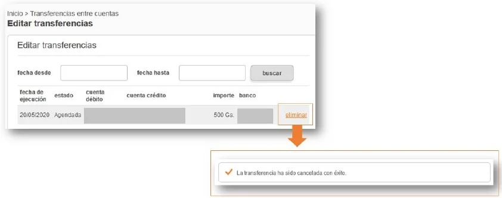

Ingresá en Transferencias y seleccioná "Más opciones de transferencias".

Dentro del listado, elegí "Editar transferencia programada/agendada".

Buscá la transferencia que querés cancelar y hacé clic en "Eliminar".

Vas a ver el mensaje: "La transferencia ha sido cancelada con éxito."